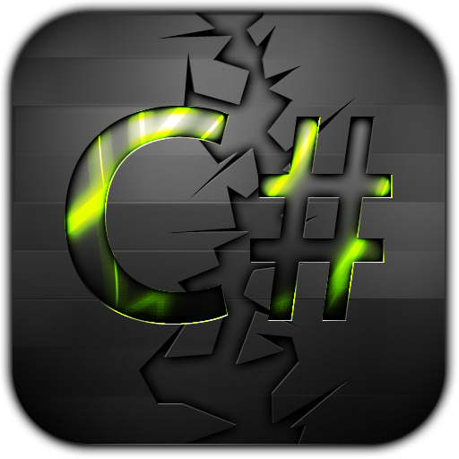

<!DOCTYPE HTML>
<!--
	Fractal by HTML5 UP
	html5up.net | @n33co
	Free for personal and commercial use under the CCA 3.0 license (html5up.net/license)
-->
<html>
	<head>
		<title>JSG CV</title>
		<meta charset="utf-8" />
		<meta name="viewport" content="width=device-width, initial-scale=1" />
		<!--[if lte IE 8]><script src="assets/js/ie/html5shiv.js"></script><![endif]-->
		<link rel="stylesheet" href="assets/css/main.css" />
		<!--[if lte IE 8]><link rel="stylesheet" href="assets/css/ie8.css" /><![endif]-->
		<!--[if lte IE 9]><link rel="stylesheet" href="assets/css/ie9.css" /><![endif]-->
	</head>
	<body id="top">

		<!-- Header -->
			<header id="header">
				<div class="content">
					<h1><a href="#">Jean-Sébastien Gravel</a></h1>
					<p>A simple page to share <b>Myself</b> with you  :)</p>
					<ul class="actions">
						<li><a href="https://dl.dropboxusercontent.com/u/21725432/cv_Jean-SebastienGravel.pdf" class="button special icon fa-download">Download French PDF CV</a></li>
						<li><a href="#one" class="button icon fa-chevron-down scrolly">Learn More</a></li>
					</ul>
				</div>
				<div class="image phone"><div class="inner"></div></div>
			</header>

		<!-- Education -->
			<section id="one" class="wrapper style2 special">
				<header class="major">
					<h2>Education</h2>
                    <p>University of Sherbrooke</p>
                    <p>Bachelor in Software Engineering</p>
				</header>
				<ul>
					<li>Finished December 2014</li>
				</ul>
			</section>

		<!-- Skills -->
			<section id="two" class="wrapper">
				<div class="inner alt">
					<section class="spotlight">
						<div class="image"></div>
						<div class="content">
							<h3>Programation language</h3>
							<p>C#, HTML, ASP.net, SQL, Java, Objective C, CSS, JavaScript (JQuery), VBA</p>
						</div>
					</section>
					<section class="spotlight">
						<div class="image"></div>
						<div class="content">
							<h3>Tools</h3>
							<p>Visual Studio, Eclipse, XCode, Git, Jira, Oce, Photoshop</p>
						</div>
					</section>
					<section class="spotlight">
						<div class="image"></div>
						<div class="content">
							<h3>Librairies, OS and More</h3>
                            <ul class="alt">
                                <li>WPF, Spring, Silverlight, GWT</li>
                                <li>Windows, OS X, Ubuntu</li>
                                <li>Agile, Crystal Report, TFS, SQL, UML</li>
                            </ul>
						</div>
					</section>
				</div>
			</section>

		<!-- Professional Experience -->
			<section id="three" class="wrapper style2 special">
				<header class="major">
					<h2>Professional Experience</h2>
				</header>
				<ul class="actions">
                    <li>
                        <p style="margin-bottom: 0px;">
                            <span class=" image left">
                                
                            </span>
                            <div style="text-align: left">
                                <h3>Programmer   -   Full time</h3>
                                <h4 style="padding-bottom: 5px;">January 2015 - Now</h4>
                                - Develop web application with the help of these technologies: Visual studio, C#, ASP.net, Sql.<br />
                                - Make new screens and new features for the application, be in charge of the builds and part of the planifications.<br />
                                - Analyse, propose and create functionnalities for the client.<br />
                                - Be part of daily Scrum meeting and talk to client on daily basis.<br />
                                - Debug the application to fix production bugs.<br />
                            </div>
                        </p>
                    </li>
                    <li>
                        <p style="margin-bottom: 0px;">
                            <span class=" image left">
                            </span> 
                            <div style="text-align: left">
                                <h3>Project Manager   -   Intern</h3>
                                <h4>Summer 2014 - 4 months</h4>
                                - Collaborate with the managers to make sure every release products releases respect the standards. <br />
                                - Coordonate the developpement process with daily followed.<br />
                                - Animate the weekly meeting for the development team. <br />
                                - Prepare and present all specifications from newly developed features.<br />
                                - Establish new process in the software development cycle to increase the productivity of the teams.<br />
                                - Put in place tools to establish a new methodologie : Kanban.<br />
                                - Extract, analyse and synthesize data of performance from teams. <br />
                            </div>
                        </p>
                    </li>
                    <li>
                        <p style="margin-bottom: 0px;">
                            <span class=" image left">
                                
                            </span>
                            <div style="text-align: left">
                                <h3>Programmer   -   Intern</h3>
                                <h4>Autumn 2013 - 4 months</h4>
                                - Technologie used during the web application development: Visual Studio, C#, Silverlight, .Net, Crystal reports, SQL. <br />
                                - Technologie used for iOS development: XCode, Objective-C, SQL. <br />
                                - Design an application with the help of Silverlight framework to generate personalise reports. <br />
                                - Generate repports form intern usage in the compagny using Crystal Report.<br />
                                - Develop Stored procedures in SQL to make the reports. <br />
                                - Develop mobile application for iOS from scratch to make a new products for clients of the compagny.<br />
                                - Extra => Spare time during school : Modify an existing iPad application to integrate new features.<br />
                            </div>
                        </p>
                    </li>
                    <li>
                        <p style="margin-bottom: 0px;">
                            <span class=" image left">
                                
                            </span>
                            <div style="text-align: left;">
                                <h3>Programmer   -   Intern</h3>
                                <h4>Winter and Autumn 2012 - 8 months</h4>
                                - Java programming, Javascript with Spring (STS) building a web application for doctors. <br />
                                - Analyse client needs and design models that meet their expectations .<br />
                                - Develop new features and fix bugs on the application. <br />
                                - Actively participates to Agile sprint meeting to analyse user stories. <br />
                                - Work in collaboration with the teams in an Agile environnement. <br />
                            </div>
                            <br />
                    </li>
                    <br />
				</ul>
			</section>

		<!-- Four -->
		
			
		

		<!-- Footer -->
			<footer id="footer">
				<ul class="icons">
					<li><a href="https://www.facebook.com/Jsg90" class="icon fa-facebook"><span class="label">Facebook</span></a></li>
					<li><a href="https://ca.linkedin.com/pub/jean-sébastien-gravel/50/799/a34" class="icon fa-linkedin-square"><span class="label">Linkedin</span></a></li>
					<li><a href="https://github.com/jsgravel" class="icon fa-github-square"><span class="label">Github</span></a></li>
				</ul>
				<p class="copyright">&copy; JSG. Credits: <a href="http://html5up.net">HTML5 UP</a> and Jean-Sebastien Gravel</p>
			</footer>

		<!-- Scripts -->
			<script src="assets/js/jquery.min.js"></script>
			<script src="assets/js/jquery.scrolly.min.js"></script>
			<script src="assets/js/skel.min.js"></script>
			<script src="assets/js/util.js"></script>
			<!--[if lte IE 8]><script src="assets/js/ie/respond.min.js"></script><![endif]-->
			<script src="assets/js/main.js"></script>

	</body>
</html>